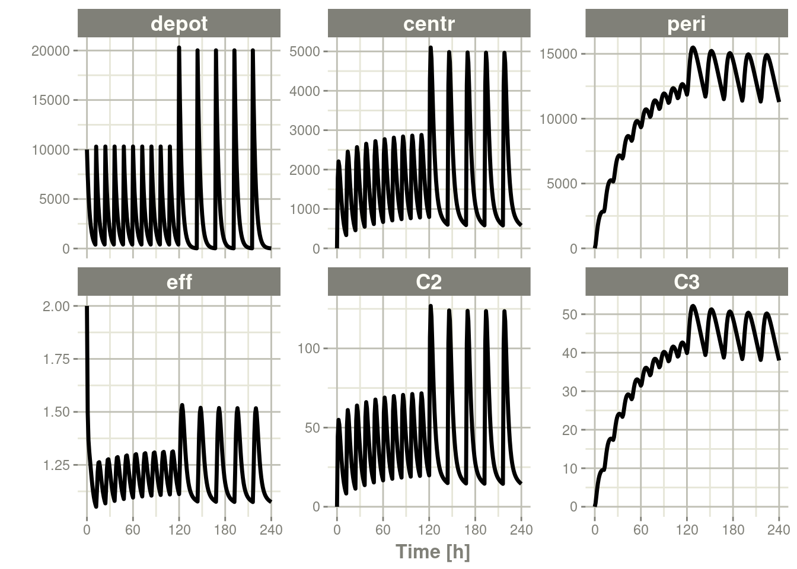

Chapter 12 Examples
This section is for example models to get you started in common simulation scenarios.
12.1 Weight based dosing
This is an example model for weight based dosing of daptomycin. Daptomycin is a cyclic lipopeptide antibiotic from fermented Streptomyces roseosporus.
There are 3 stages for weight-based dosing simulations: - Create RxODE model - Simulate Covariates - Create event table with weight-based dosing (merged back to covariates)
12.1.1 Creating a 2-compartment model in RxODE
library(RxODE)
## Note the time covariate is not included in the simulation
m1 <- RxODE({
CL ~ (1-0.2*SEX)*(0.807+0.00514*(CRCL-91.2))*exp(eta.cl)
V1 ~ 4.8*exp(eta.v1)
Q ~ (3.46+0.0593*(WT-75.1))*exp(eta.q);
V2 ~ 1.93*(3.13+0.0458*(WT-75.1))*exp(eta.v2)
A1 ~ centr;
A2 ~ peri;
d/dt(centr) ~ - A1*(CL/V1 + Q/V1) + A2*Q/V2;
d/dt(peri) ~ A1*Q/V1 - A2*Q/V2;
DV = centr / V1 * (1 + prop.err)
})12.1.2 Simulating Covariates
This simulation correlates age, sex, and weight. Since we will be using weight based dosing, this needs to be simulated first
set.seed(42)
library(dplyr)
nsub=30
### Simulate Weight based on age and gender
AGE<-round(runif(nsub,min=18,max=70))
SEX<-round(runif(nsub,min=0,max=1))
HTm<-round(rnorm(nsub,176.3,0.17*sqrt(4482)),digits=1)
HTf<-round(rnorm(nsub,162.2,0.16*sqrt(4857)),digits=1)
WTm<-round(exp(3.28+1.92*log(HTm/100))*exp(rnorm(nsub,0,0.14)),digits=1)
WTf<-round(exp(3.49+1.45*log(HTf/100))*exp(rnorm(nsub,0,0.17)),digits=1)
WT<-ifelse(SEX==1,WTf,WTm)
CRCL<-round(runif(nsub,30,140))
## id is in lower case to match the event table
cov.df <- tibble(id=seq_along(AGE), AGE=AGE, SEX=SEX, WT=WT, CRCL=CRCL)
print(cov.df)#> # A tibble: 30 x 5
#> id AGE SEX WT CRCL
#> <int> <dbl> <dbl> <dbl> <dbl>
#> 1 1 66 1 49.4 83
#> 2 2 67 1 52.5 79
#> 3 3 33 0 97.9 37
#> 4 4 61 1 63.8 66
#> 5 5 51 0 71.8 127
#> 6 6 45 1 69.6 132
#> 7 7 56 0 61 73
#> 8 8 25 0 57.7 47
#> 9 9 52 1 58.7 65
#> 10 10 55 1 73.1 64
#> # ... with 20 more rows12.1.3 Creating weight based event table
s<-c(0,0.25,0.5,0.75,1,1.5,seq(2,24,by=1))
s <- lapply(s, function(x){.x <- 0.1 * x; c(x - .x, x + .x)})
e <- et() %>%
## Specify the id and weight based dosing from covariate data.frame
## This requires RxODE XXX
et(id=cov.df$id, amt=6*cov.df$WT, rate=6 * cov.df$WT) %>%
## Sampling is added for each ID
et(s) %>%
as.data.frame %>%
## Merge the event table with the covarite information
merge(cov.df, by="id") %>%
as_tibble
e#> # A tibble: 900 x 12
#> id low time high cmt amt rate evid AGE SEX WT CRCL
#> <int> <dbl> <dbl> <dbl> <chr> <dbl> <dbl> <int> <dbl> <dbl> <dbl> <dbl>
#> 1 1 0 0 0 (obs) NA NA 0 66 1 49.4 83
#> 2 1 NA 0 NA (default) 296. 296. 1 66 1 49.4 83
#> 3 1 0.225 0.246 0.275 (obs) NA NA 0 66 1 49.4 83
#> 4 1 0.45 0.516 0.55 (obs) NA NA 0 66 1 49.4 83
#> 5 1 0.675 0.729 0.825 (obs) NA NA 0 66 1 49.4 83
#> 6 1 0.9 0.921 1.1 (obs) NA NA 0 66 1 49.4 83
#> 7 1 1.35 1.42 1.65 (obs) NA NA 0 66 1 49.4 83
#> 8 1 1.8 1.82 2.2 (obs) NA NA 0 66 1 49.4 83
#> 9 1 2.7 2.97 3.3 (obs) NA NA 0 66 1 49.4 83
#> 10 1 3.6 3.87 4.4 (obs) NA NA 0 66 1 49.4 83
#> # ... with 890 more rows12.1.4 Solving Daptomycin simulation
data <- rxSolve(m1, e,
## Lotri uses lower-triangular matrix rep. for named matrix
omega=lotri(eta.cl ~ .306,
eta.q ~0.0652,
eta.v1 ~.567,
eta.v2 ~ .191),
sigma=lotri(prop.err ~ 0.15),
addDosing = TRUE, addCov = TRUE)
print(data)#> ______________________________ Solved RxODE object _____________________________
#> -- Parameters ($params): -------------------------------------------------------
#> # A tibble: 30 x 5
#> id eta.cl eta.v1 eta.q eta.v2
#> <fct> <dbl> <dbl> <dbl> <dbl>
#> 1 1 0.563 0.580 0.0360 -0.246
#> 2 2 0.0341 0.406 -0.139 -0.481
#> 3 3 -0.447 0.0952 -0.185 -0.249
#> 4 4 -0.988 0.248 -0.131 -0.449
#> 5 5 0.144 -1.14 0.106 0.360
#> 6 6 -0.689 0.407 -0.193 -0.200
#> 7 7 -0.426 -0.706 -0.190 -0.234
#> 8 8 -0.212 0.728 0.335 0.0665
#> 9 9 0.0884 -0.934 0.337 0.154
#> 10 10 -0.557 1.29 0.0163 -0.140
#> # ... with 20 more rows
#> -- Initial Conditions ($inits): ------------------------------------------------
#> centr peri
#> 0 0
#> -- First part of data (object): ------------------------------------------------
#> # A tibble: 900 x 9
#> id evid cmt amt time DV SEX WT CRCL
#> <int> <int> <int> <dbl> <dbl> <dbl> <dbl> <dbl> <dbl>
#> 1 1 1 1 296. 0 0 1 49.4 83
#> 2 1 0 NA NA 0 0 1 49.4 83
#> 3 1 0 NA NA 0.246 2.32 1 49.4 83
#> 4 1 0 NA NA 0.516 19.6 1 49.4 83
#> 5 1 0 NA NA 0.729 23.2 1 49.4 83
#> 6 1 0 NA NA 0.921 21.1 1 49.4 83
#> # ... with 894 more rows
#> ________________________________________________________________________________plot(data, log="y")#> Warning in self$trans$transform(x): NaNs produced#> Warning: Transformation introduced infinite values in continuous y-axis
12.1.5 Daptomycin Reference
This weight-based simulation is adapted from the Daptomycin article below:
Dvorchik B, Arbeit RD, Chung J, Liu S, Knebel W, Kastrissios H. Population pharmacokinetics of daptomycin. Antimicrob Agents Che mother 2004; 48: 2799-2807. doi:(10.1128/AAC.48.8.2799-2807.2004)[https://dx.doi.org/10.1128%2FAAC.48.8.2799-2807.2004]
This simulation example was made available from the work of Sherwin Sy with modifications by Matthew Fidler